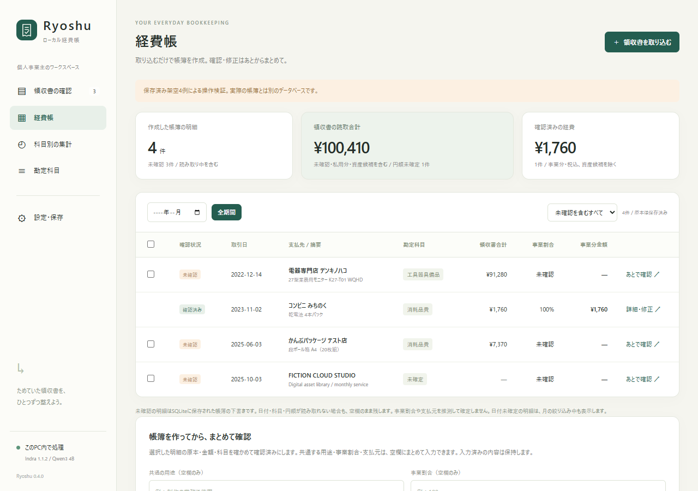

取り込む
画像・PDFをIndra OCRで読み取ります。
Ryoshu · ローカル領収書OCR
OCRも、AIの科目候補も、帳簿の保存も。
領収書を外部のOCR・AIへ送らずに整理します。
個人事業主・フリーランス向け / Windows / CPU実行・GPU不要
初回の依存・モデル取得にはネット接続が必要です。

32 SECOND INTRODUCTION
16:9・1920×1080 / 32秒・30fps・無音。映像ソースはClaude Opus 5.5が制作。PC内の流れを図解し、架空の原本と保存済み実画面を使用しています。
v1.0.0公開候補では、ファイル・フォルダー選択とドロップ、PDFのページ分割、進捗と再試行、名前付きの確認結果、バックアップ復元を追加しています。正式リリース前の候補です。
v1公開候補の画面・追加検証・レビュー記録 ↗このPCの中で
画像・PDFをIndra OCRで読み取ります。
別のローカルAIが38科目・14確認条件から提案します。
読み取った内容と科目候補を、未確認の帳簿としてSQLiteへ自動保存します。
一覧で確認・修正。CSV→Freee、MFクラウド、弥生などに取り込みます。
SAVED FICTIONAL EXAMPLES
実際の検証から4件を抜き出しました。この紹介ページは保存済み結果を表示し、OCR・AIは実行しません。
保存済みデータを読み込んでいます。
OPEN EVIDENCE
異なる100種類の架空PDFを取込・OCR・ローカルAIへ通した結果です。期待値、修正前後、残った誤り、手動補正を公開しています。
| 元の100件の回帰検査 | 一致数 / 評価数 |
|---|---|
| 金額・円額未確定の扱い | 97 / 97 |
| 日付 | 99 / 100 |
| 店名 | 86 / 100 |
| 暫定科目 | 47 / 48 |
金額の分母から返金3件を除外。暫定科目は科目候補を評価する48件が対象です。
映像制作時点のv0.4の操作は、保存済みの架空4例で別に検査しています。v1公開候補は119件のPython検査と21項目の画面操作を別に確認しています。画面検査のOCR・AI値は保存済み結果の再現で、通常AIの100件再検査は未完了です。
同じ100件を修正にも使った回帰検査です。未知の実物領収書の正答率を示すものではありません。元のモデル候補と、確認欄の手動補正は分けて記録しています。
Windows 11・64bit、Python 3.12またはuv、日本語フォント、Ollama。GPU不要。最低RAMは未測定です。
確認済み環境と要件 ↗初回に依存・OCR重み・約2.5GBのQwenモデルを取得します。準備後のOCR・科目判断・帳簿保存はPC内です。
導入手順 ↗支出の経費帳と税込仕訳が対象です。売上、口座照合、償却、決算・申告書、返金・外貨の仕訳は対象外です。実サービスへのCSV取込は未検証です。
アプリコードはMIT。Indra重みは事業規模・資金調達・競合用途等に制限があります。保存データは暗号化していません。
モデルと依存元の条件 ↗